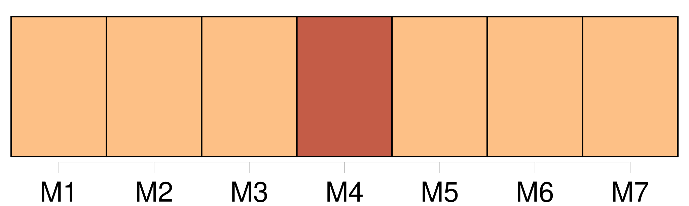
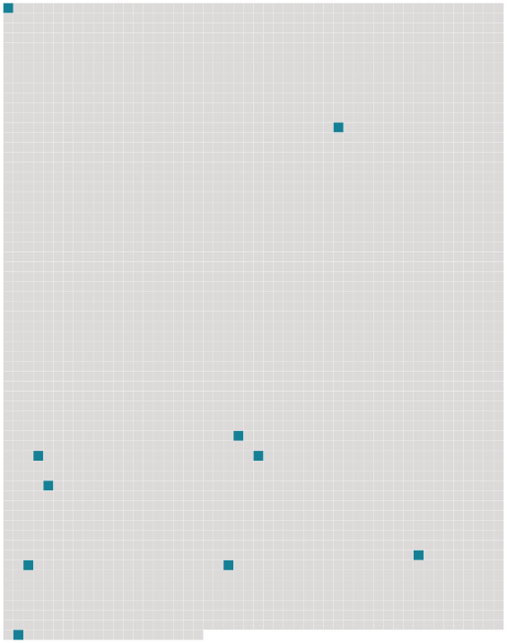

Longueur nb maillons : 10 mentions |
 |
[On] compte en 33 2016 34 moins de 800 000 zèbres au total. [21 phrases]
117 Rôle [40 phrases] À ce moment -là, [on] pense qu'ils ressemblaient beaucoup au zèbre de Grévy d'aujourd'hui. [2 phrases]
De 342 [nos] jours, il est presque impossible de distinguer le crâne d'un zèbre de 343 celui d'un cheval, mais [nous] pouvons penser que les équidés qui colonisèrent les savanes tropicales devinrent des zèbres, laissant 344 les déserts arides aux ânes sauvages et 346 les zones tempérées de 347 l'hémisphère Nord aux chevaux sauvages. [3 phrases]
356 L'évolution de 357 nombreuses espèces d'équidés est mal connue, mais [on] sait qu'il existait encore 360 des ânes sauvages et des zèbres en Europe à 358 la fin de 359 la dernière période glaciaire de 361 l’ ère quaternaire. [8 phrases]
[On] rencontre aussi 407 le terme zébresse ou 408 zebrette.
[On] dit que le zèbre hennit comme le cheval mais le zèbre de Grévy brait, comme l'âne, [on] dit aussi qu'il jappe. [10 phrases]
Dans 450 plusieurs langues ( comme 451 l'espagnol, 452 l'anglais ou 453 le néerlandais ), [on] appelle 454 le passage piéton respectivement 455 le passage-zèbre, 456 le croisement-zèbre et 457 le sentier-zèbre. |
 |
Il est possible de télécharger la ressource sur la page Ortolang |
Si vous avez des questions ou vous voyez des erreurs, merci d'envoyer un mail à silvia.federzoni89@gmail.com |